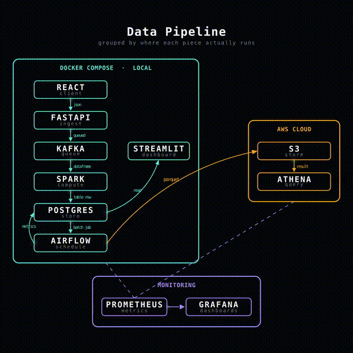

React/FastAPI로 만든 전자상거래 서비스의 사용자 행동 이벤트를 Kafka·Spark로 실시간 처리하고 Airflow 배치로 집계해 AWS 데이터 레이크까지 적재하는 파이프라인을, 1인으로 설계·구현하고 장애 주입·부하 테스트로 직접 검증했습니다.
기반 데이터셋(UCI Online Retail, 약 54만 건)에는 view·search·cart 같은 행동 로그가 없고 완료된 거래 기록만 있었습니다. 이 거래 기록을 기반으로 view→add_to_cart→purchase 퍼널을 합성(비율 10:3:1)하고, 그 이벤트를 실제로 받을 서비스(React+FastAPI)를 직접 구축해 "데이터가 실제로 발생하는 지점부터 소비되는 지점까지"를 다루는 경험을 만들고, 중복 적재 방지·장애 내구성·부하 대응을 스스로 검증하는 것을 목표로 삼았습니다.

[실시간 경로]
React ──POST /events──▶ FastAPI
│
┌─────────────┼─────────────┐
▼ ▼
outbox_events Redis
(결제와 같은 트랜잭션) (멱등성 키 · Rate Limiting)
│
▼
Outbox Relay (폴링)
│
▼
Kafka (KRaft, user-events)
│
▼
Spark Structured Streaming
│
▼
PostgreSQL ── raw_events / product_stats / traffic_stats
[배치 경로]
raw_events ─▶ Airflow daily_etl (일 1회) ─▶ daily_metrics (DAU·전환율·매출)
raw_events ─▶ Airflow dimensional_model_etl ─▶ fact_events + dim_date/product/user (Star Schema, Type2 SCD)
─▶ data_quality_check (Great Expectations, 불량 데이터 격리)
─▶ export_to_s3 ─▶ S3(Parquet, dt 파티션) ─▶ Glue Crawler ─▶ Athena
[관측]
Prometheus(메트릭) + Grafana(대시보드) + Loki/Promtail(로그) + k6(부하 테스트)
인프라는 Docker Compose로 17개 컨테이너(PostgreSQL, Kafka, Airflow 4개, backend, outbox-relay, Redis, frontend, dashboard, Prometheus, Grafana, Loki, Promtail, exporter 2개 등)를 묶었고, Spark는 Java 의존성 문제로 컨테이너화하지 않고 로컬에서 별도 실행했습니다.
프로젝트 저장소에 ADR(Architecture Decision Record) 12건을 남겼고, 각 결정마다 후보를 비교했습니다.
| 항목 | 검토한 후보 | 최종 선택 | 선택 이유 |
|---|---|---|---|
| 모니터링 | Prometheus+Grafana(오픈소스) / CloudWatch류(클라우드 네이티브) / Datadog류(SaaS) | Prometheus+Grafana | 무료, PostgreSQL/Kafka용 exporter가 성숙해 바로 적용 가능. SaaS는 월 비용·보안 검토 부담, 클라우드 네이티브는 하이브리드 통합이 어려움 (ADR 0001) |
| 부하 테스트 | k6 / Locust / JMeter | k6 | JS로 코드화되어 저장소에서 버전관리 가능, Prometheus remote-write로 Grafana와 자연스럽게 연동. Locust는 처리량이 낮고 Grafana 연동이 약함, JMeter는 GUI .jmx라 코드 리뷰가 어려움 (ADR 0002) |
| 로그 수집 | Loki / ELK(Elasticsearch) / OpenSearch / OpenObserve | Loki | Prometheus와 동일한 라벨 기반 모델이라 "Grafana 단일 화면" 원칙 유지 가능, 리소스 사용량 낮음. ELK·OpenSearch는 JVM 클러스터라 로컬 규모에 과함 (ADR 0003) |
| 이중 쓰기 정합성 | Transactional Outbox / CDC(Debezium) / Saga / 멱등성만으로 대응 | Outbox 패턴 | 서비스가 backend 하나뿐이라 Saga가 조율할 대상 자체가 없고, CDC는 별도 인프라 부담이 큼. DB 트랜잭션만으로 원자성을 보장하는 Outbox가 복잡도 대비 가장 직접적으로 맞음 (ADR 0005) |
| 멱등성 저장소 | Redis / Valkey / Memcached | Redis | 시장 점유율이 압도적이고, 이미 같은 라이선스(AGPLv3)의 Grafana·k6·Loki를 쓰고 있어 스택 일관성 확보. Memcached는 원자적 연산(NX)과 자료구조가 Rate Limiting까지 고려하면 부족 (ADR 0006) |
| 차원 모델링 | fact_events 단일 사실 테이블(Type2 SCD) / fact_purchases(구매만, Type1) | fact_events + Type2 SCD | 조회·장바구니·구매 퍼널과 매출을 한 테이블에서 자유롭게 분석 가능하고, 상품 가격 변경 이력을 시점 그대로 재구성 가능 (ADR 0008) |
| 데이터 품질 검증 | Great Expectations / Pandas·SQL 직접 검증 / Pydantic 스키마만 | Great Expectations | 검증 규칙을 선언적으로 코드에 남길 수 있고 실패 리포트가 표준화되어 원인 조사가 쉬움. Pydantic은 "형식"만 보고 "가격 음수" 같은 의미적 오류는 못 거름 (ADR 0009) |
| 클라우드 데이터 레이크 | AWS(S3+Glue+Athena) / MinIO(자체 호스팅) / GCP·Azure | AWS | 실제 클라우드 경험, 접근성 (ADR 0011) |
재고 5개, VU 50 조건에서 커넥션을 강제로 끊는 장애 주입 테스트를 실행한 결과, DB 기준 구매는 5건인데 Kafka로 전달된 이벤트는 6건으로 불일치가 발생했습니다. 원인은 checkout()이 Kafka 전송을 db.commit() 이전에 수행하는 구조였기 때문입니다. 재고 차감 직후, 커밋 전에 서버가 죽으면 DB 트랜잭션은 롤백되지만 이미 나간 Kafka 메시지는 되돌릴 수 없었습니다. 위 표의 ADR 0005 결정대로 Transactional Outbox 패턴을 도입해 Kafka로 직접 보내는 대신 같은 트랜잭션 안에서 outbox_events 테이블에 기록하고, 별도 Relay 프로세스가 폴링해 전송하도록 구조를 바꿨습니다. 동일한 장애 시나리오로 재검증한 결과 mismatch가 0건으로 완전히 해소됐습니다.
서로 다른 DAG(품질 검증→차원 모델링→S3 적재)을 ExternalTaskSensor로 연결했더니, 수동으로 각 DAG을 다른 시각에 트리거할 때 logical_date가 어긋나 센서가 타임아웃까지 무한 대기하는 문제가 발생했습니다. execution_date_fn으로 자정에 맞추는 방식은 문제를 완화할 뿐 근본적으로 해결하지 못했습니다. TriggerDagRunOperator 체인 방식으로 바꿔, 맨 앞 DAG 하나만 트리거하면 나머지가 자동으로 이어지도록 구조를 단순화했습니다.
| 구간 | 이전 | 이후 |
|---|---|---|
| API 에러율 (VU 750) | 25~45% | 0.70% |
| 처리량 (RPS) | 20~23/s | 201.9/s (약 10배) |
| p95 응답 시간 (VU 750) | 60s (타임아웃) | 2.19s |
| DB-Kafka 이벤트 불일치 (장애 주입) | 1건 mismatch | 0건 |
| 재고 초과 판매 | 전 구간 0건 (비관적 락으로 구조적 방지) | |
| 중복 요청 처리 (멱등성 키, 7회 호출) | 실제 처리 1회만 반영 | |
| CI 테스트 | 35건 전체 통과, PR마다 GitHub Actions로 자동 검증 | |
수치 출처: docs/perf/001~013 (부하 테스트·장애 주입 기록), docs/adr/0004~0007 (관련 설계 결정)
retries=3, retry_delay=5분을 설정하고 최종 실패 시 Slack으로 알림을 보냅니다. execution_date 기반으로 동작하도록 바꿔, 특정 과거 날짜의 로직 오류를 그 날짜만 골라 재실행(backfill)할 수 있습니다.quarantine_events에 원본과 실패 사유를 함께 격리합니다. 파이프라인은 실패 건이 있어도 중단되지 않고 나머지 정상 건으로 계속 진행됩니다.